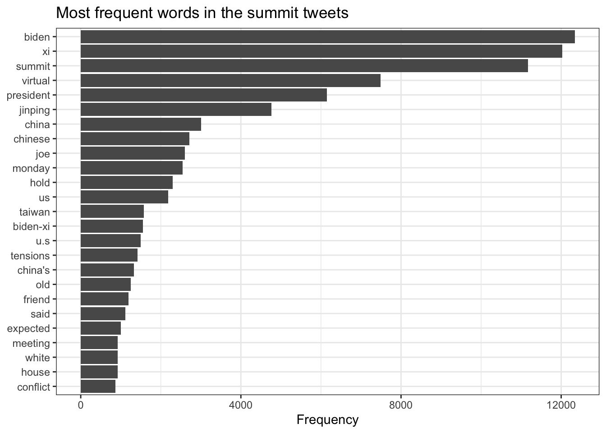

This page reads three corpora with quanteda: archived tweets from the November 2021 Biden–Xi summit, presidential documents I collected from the Compilation of Presidential Documents (CPD) on GovInfo, and the inaugural addresses since 1945. It also has YouTube comments on the October 2025 Trump–Xi meeting in Busan. Answers are labeled with the question numbers from the assignment.
Show code
library(quanteda)library(quanteda.textstats)library(quanteda.textplots)library(quanteda.textmodels)library(tidyverse)library(httr2)library(rvest)library(knitr)cpd_dir <-"data/cpd"htm_dir <-file.path(cpd_dir, "htm") # listed in .gitignoreyt_dir <-"data/youtube"tw_dir <-"data/summit"# listed in .gitignorewalk(c(htm_dir, yt_dir, tw_dir), dir.create, showWarnings =FALSE, recursive =TRUE)# save each API response once, then read the saved copycached <-function(path, f) {if (!file.exists(path)) saveRDS(f(), path)readRDS(path)}now_central <-function() format(Sys.time(), "%Y-%m-%d %H:%M:%S %Z", tz ="America/Chicago")pct <- \(x) scales::percent(x, accuracy =1)num <- \(x) format(x, big.mark =",")theme_set(theme_bw())# keyness plot with room for the longest labelsplot_keyness <-function(key, n =20) textplot_keyness(key, n = n, labelsize =3.5, margin =0.2)
My copy of quanteda_textanalytics01.R from Teams covers Part 1: the summit tweets, LSA, the hashtag and mention networks, and sentiment with sentimentr and syuzhet. It has no code for Parts 2 and 3, so I wrote those from the assignment and the quanteda tutorials: basic operations and kwic() (ch. 3), frequency, lexical diversity, keyness and similarity (ch. 4), and Wordfish (ch. 6, “Scaling and classification”). The GovInfo key from Assignment 5 and a YouTube Data API key are in ~/.Renviron and are read with Sys.getenv(). Both are sent in request headers, so they are not on this page, in the logs or in the repository.
2a. One summit, two kinds of text
2a.i. The public: summit tweets
Show code
summit <-cached(file.path(tw_dir, "summit.rds"), \(x) {read_csv("https://raw.githubusercontent.com/datageneration/datamethods/master/textanalytics/summit_11162021.csv",show_col_types =FALSE) |>select(status_id, created_at, text, is_retweet, lang)}) |>mutate(text =str_replace_all(text, "&", "&"))low <-str_to_lower(summit$text)tw <-list(n =nrow(summit), first =min(summit$created_at), last =max(summit$created_at),retweets =mean(summit$is_retweet), english =mean(summit$lang =="en"),xi =mean(str_detect(low, "\\bxi\\b")), biden =mean(str_detect(low, "biden")),old_friend =sum(str_detect(low, "old friend")), guardrails =sum(str_detect(low, "guardrail")),rules =sum(str_detect(low, "rules of the road")))sum_twt <- summit$text
The dataset has 14,520 tweets from November 7 to November 16, 2021 (UTC). 62% are retweets and 93% are in English. The file does not record the search query, but 88% of the tweets contain “Biden” and 85% contain “Xi”. It was collected with the Twitter API, which no longer offers this access, so it cannot be collected again.
Frequent words. Stopwords, URLs, hashtags and mentions are removed here; they get their own networks below.
Show code
tw_words <-tokens(sum_twt, remove_punct =TRUE, remove_url =TRUE, remove_symbols =TRUE, remove_numbers =TRUE) |>tokens_remove(c(stopwords("en"), "amp", "rt", "#*", "@*")) |>dfm()textstat_frequency(tw_words, n =25) |>ggplot(aes(x =reorder(feature, frequency), y = frequency)) +geom_col() +coord_flip() +labs(x =NULL, y ="Frequency", title ="Most frequent words in the summit tweets")

The retweets repeat a few texts many times. These are the three most repeated:
The hashtags link the summit to other topics: #coronavirus and #fentanyl in the main cluster, a separate cluster on #uyghurs, #tibetans and #humanrights, and #taiwan. The most mentioned accounts are @potus and @joebiden, then news accounts and reporters. In the network, the accounts that appear together form small clusters: reporters around @politico, and @eneskanter with NBA accounts. Those last tweets are about Uyghur and Tibetan activists at a Wizards game and the NBA player Enes Kanter, urging Biden to raise human rights with Xi at the summit.
LSA. The script keeps four dimensions (nd = 4). I ran it on the cleaned word matrix, keeping words that appear in at least 5 tweets. These are the words with the largest loadings on each dimension:
The first dimension is the summit itself (biden, xi, summit, virtual), so it mostly shows how many of the common words a tweet has. The others add quotes from the meeting (“said”, “old friend”, “candid”) and “russia” and “ukraine”. Since most tweets are retweets, a few repeated texts can shape these dimensions.
Sentiment (from the class script):
Show code
library(sentimentr)library(syuzhet)library(reshape2)sentiment_scores <-sentiment(sum_twt)agg_sentiment <-aggregate(sentiment_scores$sentiment, by =list(sentiment_scores$element_id), FUN = mean)colnames(agg_sentiment) <-c("tweet_id", "avg_sentiment")sentiment_comparison <-data.frame(syuzhet =get_sentiment(sum_twt, method ="syuzhet"),bing =get_sentiment(sum_twt, method ="bing"),afinn =get_sentiment(sum_twt, method ="afinn"),nrc =get_sentiment(sum_twt, method ="nrc"))sentiment_melted <-melt(sentiment_comparison)ggplot(sentiment_melted, aes(x = variable, y = value, fill = variable)) +geom_boxplot(show.legend =FALSE) +labs(title ="Sentiment Score Comparison Across Methods", x ="Sentiment Method", y ="Sentiment Score")
The average sentimentr score per tweet is -0.002, about neutral. The four lexicons agree only partly (correlations from 0.46 to 0.74), and they score single words, not what a tweet means. So I would not read much into the level.
2a.ii. The government: Compilation of Presidential Documents
The CPD is the official record of the President’s public remarks, statements and orders, compiled by the Office of the Federal Register (OFR). I searched the CPD collection through the GovInfo API, paged through every result, took each package’s summary for metadata, and downloaded each document’s text from /packages/{packageId}/htm. The functions are the ones from Assignment 5. govtdata01.R only downloads from an exported list, so in Assignment 5 I wrote the API search and download with httr2. Here I reuse them and log each file.
Show code
# every GovInfo call goes through this; the key comes from .Renviron and goes in a headergovinfo <-function(path) {request("https://api.govinfo.gov") |>req_url_path_append(path) |>req_headers(`X-Api-Key`=Sys.getenv("GOVINFO_API_KEY"), .redact ="X-Api-Key") |>req_retry(max_tries =3)}cpd_query <-'collection:(CPD) AND "Xi Jinping" AND publishdate:range(2021-01-20,)'search_page <-function(query, offset_mark ="*") {govinfo("search") |>req_body_json(list(query = query, pageSize =100, offsetMark = offset_mark,sorts =list(list(field ="publishdate", sortOrder ="DESC")))) |>req_perform() |>resp_body_json()}search_all <-function(query) { out <-list() mark <-"*"repeat { page <-search_page(query, mark)if (length(page$results) ==0) break out <-c(out, page$results) mark <- page$offsetMarkif (is.null(mark)) break }bind_rows(map(out, \(r) r[c("packageId", "title", "dateIssued", "lastModified")]))}cpd_found <-cached(file.path(cpd_dir, "cpd_search.rds"), \(x) {list(searched =now_central(), results =search_all(cpd_query))})ids <-unique(cpd_found$results$packageId)c(results =nrow(cpd_found$results), distinct =length(ids))
results distinct
344 344
summaries <-cached(file.path(cpd_dir, "cpd_summaries.rds"), \(x) {map(ids, \(id) {Sys.sleep(runif(1, 0.5, 1.5))govinfo(paste0("packages/", id, "/summary")) |>req_perform() |>resp_body_json() }) |>set_names(ids)})log_file <-file.path(cpd_dir, "download_log.csv")done <-if (file.exists(log_file)) read_csv(log_file, show_col_types =FALSE)$packageId elsecharacter()# one file at a time, one log row per file, so an interrupted run picks up where it stoppedfor (id insetdiff(ids, done)) { dest <-file.path(htm_dir, paste0(id, ".htm")) resp <-govinfo(paste0("packages/", id, "/htm")) |>req_error(is_error = \(r) FALSE) |>req_perform(path = dest)tibble(packageId = id, url =paste0("https://api.govinfo.gov/packages/", id, "/htm"),status =resp_status(resp), bytes =file.size(dest),md5 =unname(tools::md5sum(dest)), finished =now_central()) |>write_csv(log_file, append =file.exists(log_file))Sys.sleep(runif(1, 1, 2))}dl_log <-read_csv(log_file, show_col_types =FALSE)count(dl_log, status)
# A tibble: 1 × 2
status n
<dbl> <int>
1 200 344
A CPD document is not all the President’s words. Transcripts label each turn (“The President.”, “Q.” for a reporter, “Secretary Rubio.”, “President Xi.”). The OFR editors add subject headings inside transcripts (“China-U.S. Trade”), bracketed notes (“[Laughter]”), and at the end a note, categories, and an index of the names mentioned. So I split each document into the president’s words, other speakers, and the editors’ text. The speaker labels are found with a regular expression. It is a heuristic: a few paragraphs that start with a name, like a list of companies, are taken as another speaker.
Show code
# transcripts label each turn ("The President.", "Q.", "Secretary Rubio."); a paragraph# without a label continues the last speaker, and an unlabeled document is all the president'spresident_re <-"^(The President|President Biden|President Trump)\\. "reporter_re <-"^Q\\. "word_re <-"(?:(?:Mr|Mrs|Ms|Dr|Lt|Col|Capt|Maj|Gen|Sen|Rep|Gov|Comd|U\\.S)\\.|[A-Z][A-Za-z'’-]*|of|de|da|la|bin)"other_re <-paste0("^(?!(?:And|But|So|Alright|Okay|Well|Yes|No|Now|Oh|On|Go|Happy|That.s|Thank|Thanks|Good|Great|Right)\\b)","(?:", word_re, " ){1,5}[A-Z][A-Za-z'’-]+\\. ")label_turns <-function(paras) {# a few paragraphs hold more than one turn paras <-unlist(str_split(paras, "\\s(?=(?:Q|The President|President Biden|President Trump)\\. )"))# the editors add subject headings ("China-U.S. Trade") and bracketed notes ("[Laughter]") heading <-nchar(paras) <120&!str_detect(paras, "[.?!:;,—–\"”’)…\\]]$") bracket <-str_extract_all(paras, "\\[[^\\]]*\\]") |>map_chr(\(x) paste(x, collapse =" ")) text <-str_squish(str_remove_all(paras, "\\[[^\\]]*\\]")) speaker <-case_when(heading ~"heading",str_detect(text, president_re) ~"president",str_detect(text, reporter_re) ~"reporter",str_detect(text, other_re) ~"other",.default =NA_character_) last <-"president"for (i inseq_along(speaker)) {if (is.na(speaker[i])) speaker[i] <- lastif (speaker[i] !="heading") last <- speaker[i] }tibble(speaker, text =if_else(heading, paras, str_remove(text, president_re)), bracket)}# split each document into the president's words, other speakers, and what the OFR editors addedsplit_cpd <-function(file) { paras <-read_html(file) |>html_elements("p, h1") |>html_text2() |>str_squish() paras <- paras[paras !=""] end <-detect_index(paras, \(p) str_detect(p, "^(\\[Filed|NOTE:|Categories:|Names:|Subjects:|DCPD Number:)"))if (end ==0) end <-length(paras) +1# administration line, title, and the date line when there is one n_head <-if (str_detect(paras[3], paste0("^(", paste(month.name, collapse ="|"), ") \\d"))) 3else2 turns <-label_turns(paras[seq_len(end -1)][-seq_len(n_head)]) join <- \(x) paste(x[x !=""], collapse ="\n")tibble(header =paste(head(paras, n_head), collapse =" | "),president_words =join(turns$text[turns$speaker =="president"]),others =join(turns$text[turns$speaker %in%c("reporter", "other")]),editors =join(c(turns$text[turns$speaker =="heading"], turns$bracket, paras[seq_along(paras) >= end])))}meta <-imap(summaries, \(s, id) tibble(packageId = id,dateIssued = s$dateIssued,title = s$title,president = s$president$id %||%NA_character_,category = s$dcpdCategory[[1]]$level1 %||%NA_character_,pages =as.integer(s$pages %||%NA))) |>list_rbind()docs <- meta |>bind_cols(map(meta$packageId, \(id) split_cpd(file.path(htm_dir, paste0(id, ".htm")))) |>list_rbind()) |>mutate(admin =if_else(president =="JRB", "Biden", "Trump"),xi_president =str_detect(president_words, "\\bXi\\b"),xi_others =str_detect(others, "\\bXi\\b"),xi_editors =str_detect(editors, "\\bXi\\b"),digest =str_detect(packageId, "DIGEST|CHECKLIST"),xi_where =case_when(digest ~"annual digest or checklist", xi_president ~"the president", xi_others ~"only another speaker", xi_editors ~"only the editors",.default ="nowhere in the text"))use <- docs |>filter(!digest)
The search found 344 packages. 9 are annual compilations: the “Digest of Other White House Announcements” and “Checklist of White House Press Releases” for 2021 to 2024, and the 2026 Digest so far. They are lists compiled by the editors and cover a whole year, so I keep them in the manifest but leave them out of the analysis. That leaves 335 documents:
Show code
use |>group_by(admin) |>summarise(documents =n(), first =min(dateIssued), last =max(dateIssued),`president's words`=num(sum(str_count(president_words, "\\S+"))),`other speakers' words`=num(sum(str_count(others, "\\S+")))) |>kable()
admin
documents
first
last
president’s words
other speakers’ words
Biden
175
2021-03-17
2025-01-17
488,544
56,941
Trump
160
2025-01-20
2026-09-12
787,645
255,979
Show code
use |>count(category, sort =TRUE) |>kable()
category
n
Addresses and Remarks
205
Interviews With the News Media
102
Meetings With Foreign Leaders and International Officials
In 12 documents Xi is named only by the editors, in the index of names or the note at the end (for example, “The memorandum referred to President Xi Jinping of China”). In 41 more, only a reporter or another leader says his name. The search matches the editors’ index as well as the text, so it finds documents where the President never mentions Xi.
Xi in context.kwic() on the president’s words, with a window of 7 words. Here are a few lines from each administration:
kwic() finds 425 mentions of Xi in the president’s words. The two presidents name him differently. Biden uses the full name “Xi Jinping” in most of his mentions. Trump almost always says “President Xi”.
The summit is in the CPD as one document, Remarks Prior to a Virtual Meeting With President Xi Jinping of China (November 15, 2021). It has the opening remarks of both leaders. Xi’s remarks are a translation and are labeled “President Xi.”, so my split counts them as another speaker. The talks themselves were closed and are not in the CPD.
Good to see you, Mr. President. Next time, I hope we get to do it face to face like we used to when we traveled through China. We've spent an awful lot—a lot of time talking to one another, and I hope we can have a candid conversation tonight as well.
Maybe I should start more formally, although you and I have never been that formal with one another.
Good evening to everyone here in the United States, and good morning to you, Mr.
President, in Beijing. I'm happy we had found time to meet, and I look forward to a candid and forthright discussion like all the discussions we've had thus far.
As I've said before, it seems to me our responsibility as leaders of China and the United States is to ensure that the competition between our countries does not veer into conflict, whether intended or unintended. Just simple, straightforward competition.
It seems to me we need to establish some commonsense guardrails, to be clear and honest where we disagree, and work together where our interests intersect, especially on vital global issues like climate change.
None of this is a favor to either of our countries—what we do for one another—but it's just responsible world leadership. And you're a major world leader, and so is the United States. How our bilateral relationship evolves, seems to me, will have a profound impact not only on our countries, but quite frankly, the rest of the world.
We have a responsibility to the world, as well as to our people. It's why we believe—and you and I h...
Keyness: Biden and Trump administrations. Keyness on all of each president’s words in the corpus, with stopwords removed. Trump is the target:
Across all documents, Trump’s key words are judgments (“great”, “good”, “bad”, “beautiful”, “tremendous”) and topics of his term (“tariffs”, “Iran”). Biden’s are about domestic policy and values (“folks”, “America”, “nation”, “jobs”, “infrastructure”, “democracy”, “climate”, “pandemic”). Near “Xi”, Biden repeats one story: he has spent more time with Xi than with any other world leader, traveled 17,000 miles with him, and on the Tibetan Plateau Xi asked him to define America, and he said “possibilities”. Trump talks about the relationship (“great”, “good”, “relationship”, “get along”, “respect”, “deal”) and about Xi coming to visit.
The Busan meeting is in the CPD as three documents:
Statement on the President’s Meeting With President Xi Jinping of China in Busan, South Korea
Statements by the President
DCPD-202501077
2025-10-30
Remarks Prior to a Meeting With President Xi Jinping of China in Busan, South Korea
Meetings With Foreign Leaders and International Officials
DCPD-202501076
2025-10-30
Remarks During a Greeting With President Xi Jinping of China and an Exchange With Reporters in Busan, South Korea
Interviews With the News Media
2a.iv. Optional: YouTube comments on the Busan meeting
I searched YouTube for “Trump Xi Busan”, for videos published from October 29 to November 2, 2025, ordered by relevance, with English as the preferred language. Then I collected the top-level comments from every result that had comments. Replies are not included.
End of the Summit: President Trump and Xi Jinping Exit Af…
592,469
606
NBC News
Trump meets with Chinese President Xi Jinping
287,295
200
CNA
Trump and Xi Jinping conclude talks in Busan, South Korea…
105,344
133
CNA
Trump, Xi leave Busan after meeting for close to 2 hours
239,516
95
Associated Press
LIVE: Donald Trump and Xi Jinping’s meeting in Busan, Sou…
121,475
49
CNA
Presidents Trump and Xi’s opening remarks at Busan, South…
117,008
47
DWS News
TRUMP’S FULL DEPARTURE: Trump’s Final Walk After Historic…
49,568
30
DRM News
FULL MEETING: Trump Holds Bilateral Talks With Chinese Pr…
10,454
17
WKYC Channel 3
Trump lands in Busan, South Korea ahead of meeting China’…
34,680
10
Cross World News
Trump and Xi Seal Rare Earth and Tariff Agreement in Busan
1,201
8
The search on 2026-10-19 returned 32 videos. 26 had comments, and I collected 1,232 top-level comments, all with HTTP 200 (see the collection log and video manifest). Most come from a few videos: NBC News, DWS News, CNA and the Associated Press. The comments were posted from 2025-10-30 to 2026-10-04, so some came almost a year after the meeting. The comment text stays on my computer and is not posted here.
To compare with the tweets I use only the original tweets (not retweets), since comments have nothing like retweets.
The tweets are about the summit as an event (“summit”, “virtual”, “Biden”, “Monday”, “tensions”, “Taiwan”). The comments are about Trump himself (“trump”, “maga”, “god bless”, “great”, “peace”) and the deal (“rare earth”, “deal”). The comments are a little more positive on average. Hashtags and mentions are almost absent, so the networks from 2a.i cannot be made from comments, and 8% of the comments contain Chinese characters, which the English lexicons ignore.
2b. US presidential inaugural addresses since 1945
I use MATTR (the type-token ratio in moving windows of 100 words) for lexical diversity, because the plain type-token ratio falls as a speech gets longer: its correlation with length is -0.73.
Length goes up over time (correlation with year 0.41). The shortest is Roosevelt’s wartime fourth inaugural in 1945 (557 words) and the longest is Trump’s in 2025 (2,913).
Lexical diversity (MATTR) rises slightly over time (0.43). The two parties are almost the same (0.685 vs 0.679).
Readability has no trend. The Flesch-Kincaid grade goes from 5.8 (Biden 2021, short sentences) to 12.3 (Nixon 1973).
Cosine similarity: a speech is most like the same president’s other speech. Of the 14 speeches by presidents who gave two, 11 are closest to that president’s other speech. The most similar pair is Reagan 1981 and 1985 (0.69); the least similar is Roosevelt 1945 and Trump 2025 (0.21).
Keyness by party is weak. There are only 11 Republican and 10 Democratic speeches, and the strongest chi-squared values are about 10 to 20. Democrats use “democracy”, “change”, “must”, “generation” and “journey” more. Republicans use “federal”, “government”, “freedom”, “country” and “great” more.
Overall, the speeches differ more by year and by president than by party.
Yes. The latest address in data_corpus_inaugural (quanteda 4.5.0) is Trump’s of January 20, 2025. If it were missing, I would take it from the same source as Part 2: the CPD has it as package DCPD-202500103. I would download the text from the API, keep the president’s words, and add it with corpus() and docvars matching the existing ones (Year, President, FirstName, Party) before combining with c(). As a check, here is the CPD version next to quanteda’s:
Show code
inaug25 <-cached(file.path(htm_dir, "inaugural_2025.rds"), \(x) { hit <-search_page('collection:(CPD) AND title:("Inaugural Address") AND publishdate:range(2025-01-20,2025-01-31)') id <- hit$results[[1]]$packageIdlist(packageId = id, title = hit$results[[1]]$title,htm =govinfo(paste0("packages/", id, "/htm")) |>req_perform() |>resp_body_string())})tmp <-tempfile(fileext =".htm")writeLines(inaug25$htm, tmp)cpd25 <-split_cpd(tmp)new_doc <-corpus(cpd25$president_words, docnames ="2025-Trump-CPD",docvars =data.frame(Year =2025L, President ="Trump", FirstName ="Donald J.", Party ="Republican"))c(CPD =ntoken(tokens(new_doc, remove_punct =TRUE)),quanteda =ntoken(tokens(data_corpus_inaugural["2025-Trump"], remove_punct =TRUE)))
CPD.2025-Trump-CPD quanteda.2025-Trump
2900 2913
The two versions differ by 13 tokens out of about 2,900. The American Presidency Project and the White House website also post the text, but the CPD is the official record and comes with metadata.
3. Wordfish
Show code
wf_dfm <-tokens(inaug, remove_punct =TRUE, remove_numbers =TRUE) |>tokens_remove(stopwords("en")) |>dfm() |>dfm_trim(min_docfreq =2)wf <-textmodel_wordfish(wf_dfm, dir =c(which(docnames(wf_dfm) =="1949-Truman"),which(docnames(wf_dfm) =="2025-Trump")))textplot_scale1d(wf, groups =droplevels(inaug$Party))
wf_fit <-tibble(year = inaug$Year, party =droplevels(inaug$Party), theta = wf$theta)wf_lm <-lm(theta ~ year + party, data = wf_fit)round(summary(wf_lm)$coefficients, 3)
Estimate Std. Error t value Pr(>|t|)
(Intercept) -69.709 9.181 -7.593 0.000
year 0.035 0.005 7.583 0.000
partyRepublican 0.057 0.224 0.253 0.803
The model uses 21 speeches and 2,093 words (stopwords removed, words in at least two speeches). The estimated positions correlate 0.87 with the year. With the year held constant, party adds almost nothing (0.06, p = 0.8).
4. Report
Two kinds of text (2a.iii). The tweets show what people on Twitter passed around during the summit week, and most of it was the news. 62% are retweets, and many repeat quotes from the opening remarks in the CPD transcript: “old friend” (1,197 tweets), “guardrails” (304), “rules of the road” (277). The hashtags and mentions add what the official text leaves out: COVID, fentanyl, Taiwan, and activists urging Biden to raise the Uyghurs and Tibet. The tweets cannot say what was agreed, and they are not a sample of the public. They were written by accounts that used the collector’s keywords in that window, for their followers.
The CPD has the President’s public words as spoken. For the summit it has one document, the remarks before the closed talks. Over five years it shows how each White House talked about China. Biden says “Xi Jinping” and retells his personal history with him. Trump says “President Xi” and talks about a great relationship, deals and tariffs. The White House produced these texts for the press and the public record, and the OFR edited them. They show how the presidents presented policy in public. They do not show how it was made. The 2025 YouTube comments were written by viewers of a few news videos, for other viewers, and are more about Trump than about China.
Data-generating processes. The tweets were chosen by a keyword and a collection window. So the frequent words and LSA describe what spread among those accounts, mostly retweets of a few posts. The CPD documents were chosen first by the White House (what it released), then by an OFR editor (what goes in, plus headings, notes and an index of names), and then by my query. The query matches that index, so 12 documents are in the corpus only because an editor listed Xi. The keyness compares what each White House released, including Trump’s long press exchanges (787,645 words in 160 documents against 488,544 in 175). So it compares two ways of talking in public. It says little about the two China policies. The inaugurals were chosen by tradition: one speech per term, the same occasion, written for the nation. The 21 speeches are all there is, so differences between them come from the year and the speaker. With only 21, party keyness is weak.
What Wordfish measures (3b). Wordfish (Slapin and Proksch 2008) assumes each word count in a speech is drawn from a Poisson distribution, with a rate set by the speech’s length, the word’s overall frequency, and the speech’s position on one hidden dimension times the word’s weight on it. Words are independent of each other and their order is ignored. On the inaugurals the dimension seems to measure time. It correlates 0.87 with the year, and party adds nothing. Postwar words (“peoples”, “resources”, “program”, “equality”) are at one end; “thank”, “everyone”, “borders”, “jobs” and “protect” are at the other. It could be the policy words of each era, or a change from formal to direct speech. To show what it measures I would need outside evidence: correlation with an independent measure (such as hand-coded tone or expert ideology scores), stable results when I change the preprocessing, and the same dimension found within one era. I must set dir because the model is identified only up to its sign. Flipping every position and word weight fits the data equally well. dir = c(Truman 1949, Trump 2025) puts Truman below Trump, so later speeches are on the positive side. Without it, the direction is arbitrary.
Source.Compilation of Presidential Documents (collection CPD), published by the Office of the Federal Register, National Archives and Records Administration, on GovInfo. Accessed through the GovInfo API (api.govinfo.gov): /search, /packages/{id}/summary and /packages/{id}/htm.
Permission. Works of the US government are in the public domain (17 U.S.C. § 105). The API needs a free api.data.gov key. I waited 1 to 2 seconds between downloads, well under the rate limit.
Query. collection:(CPD) AND “Xi Jinping” AND publishdate:range(2021-01-20,), sorted by publish date, paged 100 at a time, run on 2026-10-19 07:50:57 CDT.
Selection. The search returned 344 packages, all downloaded (HTTP 200). I excluded the 9 annual digests and checklists, leaving 335 documents: 175 from Biden and 160 from Trump. The administration comes from each package’s president field. Text analysis uses only the president’s words, split from other speakers and from editors’ headings, brackets and notes with the regular expressions above.
Gaps. The search matches the editors’ index of names, so 12 documents are included only because the editors list Xi, and in 41 more only a reporter or another leader says his name. A document where the President says only “Xi” and the editors do not list the full name could be missed. There are no results between January 20 and March 17, 2021, although Biden called Xi on February 10, 2021. That call appears only as a line in the 2021 Digest, not as a document of its own. The latest document is from 2026-09-12, so the CPD seems to run a few weeks behind, and there is no 2025 Digest yet. Translated remarks by foreign leaders and reporters’ questions are in the documents but not in my analysis. The speaker split is a heuristic.
Files
CPD download log: one row per document, with URL, HTTP status, size, MD5 and time.
CPD manifest: every package the search returned, with date, administration, category, title, whether it is included, and who names Xi in it.